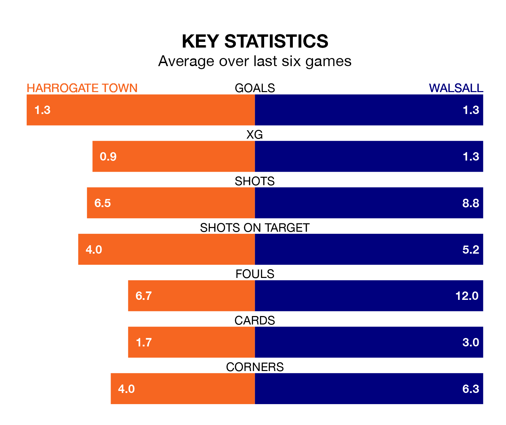

Walsall travel to Harrogate Town on Saturday in EFL League Two.
The visitors come into the game on the back of a win in their last match, having beaten Morecambe 3-0 at home, with goals from Jamille Matt, Ross Tierney and Emmanuel Adegboyega.
Harrogate, meanwhile, drew their last match, 0-0 against Crewe Alexandra.
In the last 10 years, Harrogate and Walsall have played each other on seven occasions. Harrogate won three of them, Walsall one, and they drew three times.
On average, Harrogate scored 1.6 goals and the Saddlers 1.0 in those matches.
Their last meeting was on November 11, when Harrogate won 1-0 away.
With 40 goals in 32 games so far this season, Harrogate are scoring at below the league average rate with 1.2 goals per game. But they are conceding fewer than average too, letting in 46 goals at a rate of 1.4 per game.
Walsall, meanwhile, are average scorers, with 1.5 goals per game. They have conceded 1.4 goals per game.
Town's Matty Daly is among the league's most creative players, racking up nine assists in 26 appearances so far this season, and holding second spot in EFL League Two's assist charts.
For the Saddlers, Isaac Hutchinson has set up the most goals, having laid on six assists in 32 games.
The hosts are seventh in the table after 32 games, of which they have won 14 and drawn six, earning 48 points.
The away side are nine places behind Harrogate in 16th, with 12 wins and nine draws putting them on 45 points.
Harrogate are in reasonable form in EFL League Two, with three wins and two draws from their last six games.
With two wins and three draws over that period, Walsall's form is slightly worse – they have taken nine points from 18, compared to Town's 11.
Updated: 10:08 (UTC), 23/02/24